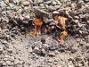

fossil-fuel

Definition: A fossil fuel is a hydrocarbon-containing material such as coal, oil, and natural gas, formed naturally in the Earth's crust from the remains of dead plants and animals that is extracted and burned as a fuel. Fossil fuels may be burned to provide heat for use directly (such as for cooking or heating), to power engines (such as internal combustion engines in motor vehicles), or to generate electricity. Some fossil fuels are refined into derivatives such as kerosene, gasoline and propane before burning. The origin of fossil fuels is the anaerobic decomposition of buried dead organisms, containing organic molecules created by photosynthesis. The conversion from these materials to high-carbon fossil fuels typically require a geological process of millions of years.In 2019, 84% of primary energy consumption in the world and 64% of its electricity was from fossil fuels. The large-scale burning of fossil fuels causes serious environmental damage. Over 80% of the carbon dioxide (CO2) generated by human activity comes from burning them: around 35 billion tonnes a year, compared to 4 billion from land development. Natural processes on Earth, mostly absorption by the ocean, can only remove a small part of this. Therefore, there is a net increase of many billion tonnes of atmospheric carbon dioxide per year. Although methane leaks are significant,: 52 the burning of fossil fuels is the main source of greenhouse gas emissions causing global warming and ocean acidification. Additionally, most air pollution deaths are due to fossil fuel particulates and noxious gases. It is estimated that this costs over 3% of the global gross domestic product and that fossil fuel phase-out will save millions of lives each year.Recognition of the climate crisis, pollution and other negative impacts caused by fossil fuels has led to a widespread policy transition and activist movement focused on ending their use in favor of sustainable energy. However, because the fossil-fuel industry is so heavily integrated in the global economy and heavily subsidized, this transition is expected to have significant economic impacts. Many stakeholders argue that this change needs to be a just transition and create policy that addresses the societal burdens created by the stranded assets of the fossil fuel industry.International policy, in the form of United Nations sustainable development goals for affordable and clean energy and climate action, as well as the Paris Climate Agreement, is designed to facilitate this transition at a global level. In 2021, the International Energy Agency concluded that no new fossil fuel extraction projects could be opened if the global economy and society wants to avoid the worst impacts of climate change and meet international goals for climate change mitigation.
Source: Wikipedia
Wikipedia Page (Something wrong with this association? Let us know.)
Wikidata Page (Something wrong with this association? Let us know.)